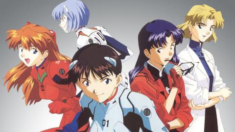

--- 2021---
Neon Genesis Fandom
By María Jesús Hernández Juárez
Neon Genesis Evangelion (新世紀エヴァンゲリオン, Shin Seiki Evangerion) o conocida simplemente como Evangelion, es un anime creado por el estudio Gainax y dirigido por Hideaki Anno.
La historia de la obra se da lugar en un mundo futurista en el que una organización paramilitar llamada NERV protege a la humanidad de los ataques de seres de origen y naturaleza desconocidos, los «ángeles», utilizando para ello mechas humanoides llamados «EVAs».
A medida que avanza la trama, esta se vuelve paulatinamente más confusa y psicológica, en donde las personalidades de los personajes se hacen cada vez más inestables y su desarrollo se torna fundamental.
Hideaki Anno, el director y guionista, ha expresado que el desarrollo de la serie estuvo inspirado en su propia experiencia, en virtud de la cual los personajes muestran una amplia gama de sus afecciones emocionales y de su personalidad.
El anime cuenta con veintiséis episodios que fueron transmitidos por primera vez entre octubre de 1995 y marzo de 1996. Debido a la fama obtenida, pronto se fueron creando diversos spin-offs.
Esta serie ha sido clasificada en los géneros ciencia ficción, mecha y distopía, conteniendo diversos elementos de filosofía, psicología y religión, con marcadas influencias abrahámicas. Además, sus características técnicas y temáticas, así como la complejidad y simbolismo de su historia, han hecho que esta producción sea considerada como uno de los mejores ejemplos del género del realismo épico. También ha recibido algunos de los mayores premios de animación. Por todo ello, Evangelion es considerada por muchos como una de las producciones más grandes del anime.

Etimología
El título japonés de la serie, «新世紀エヴァンゲリオン» (, Shin Seiki Evangerion ), consta de dos partes: «新世紀» (, Shin Seiki ?, lit. 'Nueva era' o 'Nuevo siglo') y «Evangelion», del griego clásico εὐαγγέλιον (lit. 'buen mensajero', 'buena nueva', hispanizado como 'evangelio'); Evangelion etimológicamente no tiene relación con la palabra hebrea eva 'viviente'. Con todo, el título Neon Genesis Evangelion significaría «mensajero del nuevo comienzo». Anno consideró su connotación cristiana de presunta bendición y eligió ese nombre porque le parecía «complicado».
Un primer título pensado para la serie fue Alcion (Arushion en japonés), pero Yoshiyuki Sadamoto y Hideaki Anno acabaron confirmando Evangelion.
gracias